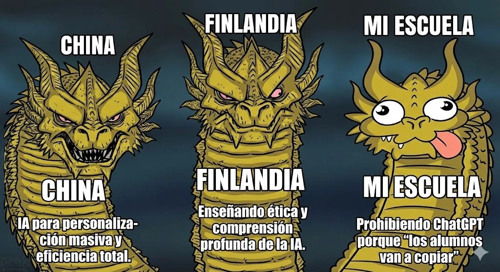

estrategIA #114 ·
Tres cabezas, tres respuestas educativas
El contexto
El dragón compara tres respuestas educativas: usar IA para personalizar la enseñanza, aprender a comprenderla y discutir su ética, o prohibir ChatGPT por miedo a que los alumnos copien. China, Finlandia y «mi escuela» son las etiquetas de esa caricatura; la imagen exagera las diferencias y no describe todos los centros de esos países.
Publicado en: estrategIA #114 — ¿Renacer o fin del maestro? La educación ante el vértigo de la IA
Leer el texto de la imagen
CHINA FINLANDIA MI ESCUELA CHINA: IA para personalización masiva y eficiencia total. FINLANDIA: Enseñando ética y comprensión profunda de la IA. MI ESCUELA: Prohibiendo ChatGPT porque “los alumnos van a copiar”.